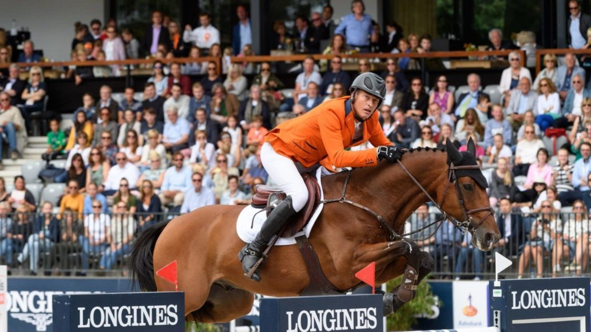

CSIO5* de Rotterdam: 41 jinetes de 11 países
Rotterdam celebra un CSIO5* del 17 de junio al 21 de junio. Repasamos quién está inscrito, según la lista oficial de la FEI.

Uso editorial
El concurso
Rotterdam acoge un CSIO5* del 17 de junio al 21 de junio. La lista de inscritos reúne a 41 jinetes de 11 naciones.
Naciones inscritas
| País | Jinetes |
|---|---|
| Bélgica | 4 |
| Brasil | 4 |
| Francia | 4 |
| Reino Unido | 4 |
| Alemania | 4 |
| Irlanda | 4 |
| Italia | 4 |
| Países Bajos | 4 |
| Suiza | 4 |
| Estados Unidos | 4 |
| Australia | 1 |
Equipos inscritos
- Bélgica: Pieter Devos, Roy Van Beek, Annelies Vorsselmans, Gregory Wathelet
- Brasil: Yuri Mansur, Marlon Modolo Zanotelli, Eduardo Pereira De Menezes, Rodrigo Pessoa
- Francia: Antoine Ermann, Nina Mallevaey, Jeanne Sadran, Kevin Staut
- Alemania: Rene Dittmer, Michael Jung, Mario Stevens, Richard Vogel
- Reino Unido: Harry Charles, Sienna Charles, Ben Maher, Jessica Mendoza
- Irlanda: Jordan Coyle, Michael Duffy, Niamh Mcevoy, Shane Sweetnam
- Italia: Piergiorgio Bucci, Emanuele Camilli, Emanuele Gaudiano, Giulia Martinengo Marquet
- Países Bajos: Willem Greve, Bas Moerings, Harrie Smolders, Maikel Van Der Vleuten
- Suiza: Martin Fuchs, Ga�tan Joliat, Alain Jufer, Jason Smith
- Estados Unidos: Karl Cook, Katherine A. Dinan, Marilyn Little, Callie Schott
- Australia: Thaisa Erwin
Lista completa de inscritos (Master List FEI)
— Redacción de Hípica al Día